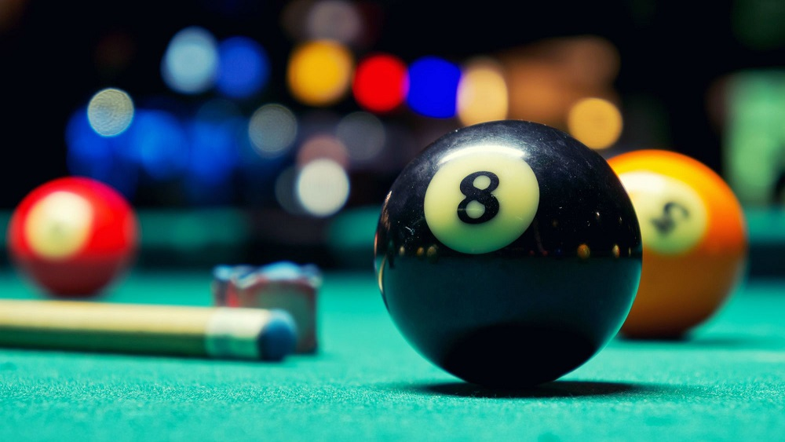

One hobby that I enjoy is Pool or Billiards. I play mostly 8 ball, which is the type most people play when going out to the bar, where you pick strips or solids and have to pocket all of those balls then lastly hit the 8 ball into a pocket as well to win the game. Some other versions I play are 9 ball, where you have to hit the balls into pockets in numerical order, or scotch doubles where you and a teammate alternate turns taking shots at the ball. So if I pocketed a ball, my teammate would then take the next shot instead of me. If he pocketed the ball then I would then go up to shoot at the 3rd object ball. Its a fun game that requires teamwork and knowing the strengths and weaknesses of your teammate so you can leave them shots they are able to make.
